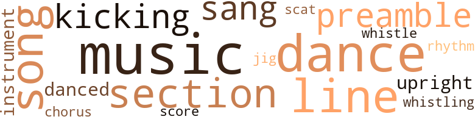
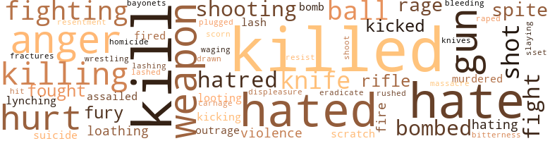

Mlitants (The), by Easley, Nivi- Kofi A. (1974)
41 music-related terms matched in this text.
Most frequent terms in this topic: music (6); dance (5); line (4); song (3); section (3)
chorus.n.01
Definition: any utterance produced simultaneously by a group
| word | sentence |
|---|---|
| chorus | They responded with a chorus of ' right on ! ' |
dance.n.01
Definition: an artistic form of nonverbal communication
| word | sentence |
|---|---|
| dance | " Why do n't you two dance while I check the lasagna and the rolls in the oven , " Gina said and left the room . |
| dance | When the dance was over he mumbled something that sounded like '' thanks , " and walked away from her in a dazed condition . |
dance.v.03
Definition: skip, leap, or move up and down or sideways
| word | sentence |
|---|---|
| dance | The band was playing a hard rock number , and several guys asked her to dance . |
| danced | Portable radios were tuned to the soul stations and the people sang , clapped and danced to the beat of rhythm and blues played at full volume . |
| dance | Partners were chosen , and they began to dance to the strains of one of the innumerable , captivating songs of the artist whom Nick considered the greatest entertainer in the world : James Brown . |
| dance | A slow one came on next , and Hank asked Gina to dance . |
| danced | " You did n't have to put me down like that when I was trying to toast you , " she said as they danced closely together , . |
jig.n.01
Definition: music in three-four time for dancing a jig
| word | sentence |
|---|---|
| jig | I - " Nick turned off the set at this point , and he and Gina did a happy jig around the bed . |
kick.v.04
Definition: kick a leg up
| word | sentence |
|---|---|
| kicking | " No , we were just watching the ballgame , " Nick said , and immediately felt like kicking himself for making such a stupid remark . |
| kicking | You were too busy kicking pebbles to notice two pretty girls sitting on a park bench . " |
music.n.01
Definition: an artistic form of auditory communication incorporating instrumental or vocal tones in a structured and continuous manner
| word | sentence |
|---|---|
| music | She put her head on his shoulder as they sat quietly listening to the music . |
| music | They were portrayed either as extremely fat , extremely black , incredibly dense and stupid semi-literate clowns , or as super-bad , super-vicious ( especially where whites were concerned ) , super-cool guys , and chicks who were incredibly attractive and did little more than fight , fuck and curse ; all to the accompanying strains of really together background music . |
| music | " As loud as that music is inside , I do n't think they heard you . " |
| music | When everyone had arrived Jackie turned off the music and motioned for everybody to quiet down . |
| music | " Damn , " Gina laughed as the music was turned on again , " I 've been kissed more tonight than in my entire life . " |
| music | She let out a loud shriek , and they were both past caring whether the loud music inside had drowned out the sound . |
musical_instrument.n.01
Definition: any of various devices or contrivances that can be used to produce musical tones or sounds
| word | sentence |
|---|---|
| instrument | He felt like a musician manipulating a very fine instrument , and he wanted the instrument in his arms to experience everything she was capable of experiencing . |
| instrument | He felt like a musician manipulating a very fine instrument , and he wanted the instrument in his arms to experience everything she was capable of experiencing . |
preamble.n.01
Definition: a preliminary introduction to a statute or constitution (usually explaining its purpose)
| word | sentence |
|---|---|
| preamble | but when he finally did ( with much oscillatory help from her ) he had shoved it in with no preamble at all and shot his load in less than two minutes . |
| preamble | Without any preamble or beating around the bush Nick told her the whole story , including Jackie 's amazingly accurate analysis of the reasons why he had been attracted to her . |
rhythm.n.04
Definition: the arrangement of spoken words alternating stressed and unstressed elements
| word | sentence |
|---|---|
| rhythm | Portable radios were tuned to the soul stations and the people sang , clapped and danced to the beat of rhythm and blues played at full volume . |
scat.n.01
Definition: singing jazz; the singer substitutes nonsense syllables for the words of the song and tries to sound like a musical instrument
| word | sentence |
|---|---|
| scat | The teams will consist of a gunner in the front scat to take care of the right side of the street , one in the back seat on the driver 's side , and of course the driver . |
score.n.02
Definition: a written form of a musical composition; parts for different instruments appear on separate staves on large pages
| word | sentence |
|---|---|
| score | The second game was in the bottom of the fourteenth inning , with the score tied 2-2 . |
section.n.01
Definition: a self-contained part of a larger composition (written or musical)
| word | sentence |
|---|---|
| section | They drove through the Forest Hills section of Queens until Gina told him to pull over . |
| section | Those who were going to bomb the bridges and gas stations had brought utility bags of the type used by high school kids to carry their books in , the bridge units in addition bringing along plastic bags of the type used by dry cleaners to cover suits and dresses , and a section of clothesline . |
| section | A five-foot section of it had been knocked down , however , and was lying on the sidewalk . |
sing.v.02
Definition: produce tones with the voice
| word | sentence |
|---|---|
| sang | " I 'll get it master , " she sang out , and went to the door . |
| sang | Portable radios were tuned to the soul stations and the people sang , clapped and danced to the beat of rhythm and blues played at full volume . |
song.n.01
Definition: a short musical composition with words
| word | sentence |
|---|---|
| song | The first album to play was by Aretha Franklin , and the first song was a slow one . |
| song | When the song was finished they continued to grind against each other until the next song came on . |
| song | When the song was finished they continued to grind against each other until the next song came on . |
| songs | Partners were chosen , and they began to dance to the strains of one of the innumerable , captivating songs of the artist whom Nick considered the greatest entertainer in the world : James Brown . |
tune.n.01
Definition: a succession of notes forming a distinctive sequence
| word | sentence |
|---|---|
| line | All three rooms were on a line , with connecting doors between them . |
| line | " Just let him get out of line once - " she muttered to herself as she brushed her long blonde hair . |
| line | There are n't going to be any trains running on this line for quite a while . |
| line | Yet there were several bullet holes in the building they were walking beside , and they were in a straight line ; as if fired from a passing car . |
upright.n.02
Definition: a piano with a vertical sounding board
| word | sentence |
|---|---|
| upright | Roughly he jerked her upright , and took a quick look around them . |
| upright | Nick suddenly jerked upright . |
whistle.v.01
Definition: make whistling sounds
| word | sentence |
|---|---|
| whistle | He could carve a person into mincemeat and whistle while he did it . |
| whistling | Nick was whistling gaily as he and Gina entered the car for the short trip to the 180th St. elevated station . |
251 violence-related terms matched in this text.
Most frequent terms in this topic: killed (27); kill (21); hated (15); hate (13); anger (10)
abhorrence.n.01
Definition: hate coupled with disgust
| word | sentence |
|---|---|
| loathing | She gave Nick a long , wet open-mouthed kiss and then got up slowly , her contempt and loathing of Phyllis showing clearly and unmistakably . |
| loathing | Klein looked at Nick with loathing . |
| loathing | He told her exactly how he felt about whites , why he hated them , why he would always hate them , and why he could never bring himself to view them ( as a whole ) with anything but suspicion , contempt and loathing . |
abrasion.n.01
Definition: an abraded area where the skin is torn or worn off
| word | sentence |
|---|---|
| scratch | We 've robbed a few honky merchants to get the scratch to buy our weapons and pay the rent , and we 've bombed a police station or two . |
| scratch | " How did you ever manage to save up all that scratch any - " Gifts . |
anger.n.01
Definition: a strong emotion; a feeling that is oriented toward some real or supposed grievance
| word | sentence |
|---|---|
| anger | Nick felt the anger welling up inside him . |
| anger | Then abruptly he squared his shoulders and looked up with eyes blazing with anger . |
| anger | With a mixture of anger and sorrow he flung the keys in the general direction of the sofa ( his eyes had n't become adjusted to the darkness yet , and he could n't see a thing ) . |
| anger | In blazing anger Nick 's fist had shot out , catching her full in the face , with the full weight of his arm and shoulder behind it . |
| anger | Her face showed extreme fatique , but it also showed a hardness and anger he had n't seen before . |
| anger | Nick felt the anger welling inside him and fought hard to keep it under control . |
| anger | When Nick observed this his anger subsided a little and he became more sure of himself . |
| anger | Gina 's eyes blazed with anger as she listened , and by the time he had finished they were filmy with tears . |
| anger | His anger welled up again . |
| anger | Nick felt the anger flowing from him like water pouring down a drain . |
attack.v.01
Definition: launch an attack or assault on; begin hostilities or start warfare with
| word | sentence |
|---|---|
| assailed | Again , a deafening roar assailed his ears . |
| assailed | That night as Nick was fixing drinks for himself and Gina he was assailed by conflicting emotions . |
bayonet.n.01
Definition: a knife that can be fixed to the end of a rifle and used as a weapon
| word | sentence |
|---|---|
| bayonets | In it were samples of almost every weapon known to modern man : rifles of every type and description , hand guns , shotguns ( some with sawed-off barrels ) , hand grenades , bayonets , thousands upon thousands of rounds of ammunition ; they even had a few land mines and two bazookas . |
bleeding.n.01
Definition: the flow of blood from a ruptured blood vessel
| word | sentence |
|---|---|
| bleeding | She died on the operating table from a combination of shock and internal bleeding . |
bombard.v.02
Definition: throw bombs at or attack with bombs
| word | sentence |
|---|---|
| bombed | We 've robbed a few honky merchants to get the scratch to buy our weapons and pay the rent , and we 've bombed a police station or two . |
| bomb | " We could bomb some pig pens and shoot up some pig cars . " '' |
| bomb | Those who were going to bomb the bridges and gas stations had brought utility bags of the type used by high school kids to carry their books in , the bridge units in addition bringing along plastic bags of the type used by dry cleaners to cover suits and dresses , and a section of clothesline . |
| bombed | He knew they would n't be able to take the train today since the next station down the line , East Tremont Ave. , was one of the ones his boys had bombed ; but he had to play the game . |
| bombed | " He bombed a few gas stations in the Bronx and Queens , hit another train station , blew up a couple of bridges and demolished a police station . |
| bombed | " Is that why you and your group bombed all those places , " she said very softly , still studying the paper , " or was it because of Willie ? " |
| bombed | Remember how they bombed that church in Birmingham and killed those four little black girls ? |
contemn.v.01
Definition: look down on with disdain
| word | sentence |
|---|---|
| scorn | Gina said , her voice dripping with scorn . |
displeasure.n.01
Definition: the feeling of being displeased or annoyed or dissatisfied with someone or something
| word | sentence |
|---|---|
| displeasure | He felt that he had been used , and was trying to show his displeasure . |
draw.v.23
Definition: pull (a person) apart with four horses tied to his extremities, so as to execute him
| word | sentence |
|---|---|
| drawn | She was black essence , Black Woman personified , and Nick felt himself being drawn to her more and more . |
eliminate.v.03
Definition: kill in large numbers
| word | sentence |
|---|---|
| eradicate | But things like that take a long time to eradicate , and the job still is n't done . |
engage.v.07
Definition: carry on (wars, battles, or campaigns)
| word | sentence |
|---|---|
| waging | We will finally be waging war against the enemy at the time of our choosing , at the places of our choosing , on our own conditions ! |
fight.n.05
Definition: a boxing or wrestling match
| word | sentence |
|---|---|
| fight | " When I was a kid do you know that if another kid called somebody black-not a black m.f. or a black s.o.b. , just black - there would be a fight almost to the death . |
| fights | " You 're forever trying to pick fights with me . |
| fight | They were portrayed either as extremely fat , extremely black , incredibly dense and stupid semi-literate clowns , or as super-bad , super-vicious ( especially where whites were concerned ) , super-cool guys , and chicks who were incredibly attractive and did little more than fight , fuck and curse ; all to the accompanying strains of really together background music . |
fight.v.02
Definition: fight against or resist strongly
| word | sentence |
|---|---|
| fought | She fought against it , could n't understand why she had it , but could n't get rid of it . |
| fight | Some insisted on being called Black while others wanted to fight if you called them that . |
| fighting | I remember , " said Gina fighting back the tears . |
| fighting | It was prejudice I was fighting , and that 's just not a good enough reason for me to feel the way you do . |
| fighting | People were queued up in a mad pack at the regular and emergency exits , fighting desperately to get through the narrow doors . |
| fighting | The scene on the street was one of incredible confusion , with curious onlookers trying to get a peck inside and the panic-stricken patrons fighting like wild animals to break through their ranks and escape the hell they had just witnessed . |
| fighting | Transit police were fighting a desperate losing battle in an attempt to get down the stairs . |
| fighting | Nick asked mechanically , fighting to clear his mind and bring it back to reality . |
| fighting | There did seem to be an unusual number of people fighting to hold on to the pole beside them while there were plenty of handles available throughout the car . |
| fight | " Man those pigs would rather fight a lion with a flyswatter than be caught on the streets of Harlem tonight ! " |
| fought | Nick felt the anger welling inside him and fought hard to keep it under control . |
| fought | He did n't want to , fought hard within himself against it , but came to the conclusion that he had no choice . |
fracture.n.01
Definition: breaking of hard tissue such as bone
| word | sentence |
|---|---|
| fractures | Phyllis 's body had been identified , and the autopsy showed that she had died from massive fractures of the head ; every bone in her face was broken , as if she had been hurled into the pavement with terrific force . |
fury.n.01
Definition: a feeling of intense anger
| word | sentence |
|---|---|
| rage | She had put on her bikini bottom in a murderous rage and stormed back to the party . |
| fury | " Oh , nothing much , " she said , trying without success to keep the fury and heartbreak out of her voice . |
| rage | She saw his features contorted in an expression of murderous rage that was terrifying to behold . |
| rages | He got uptight about the least little thing and frequently flew into the most violent rages at the most trivial and unimportant of remarks . |
| fury | Another source of irritating fury was the fact that the mailboxes had almost completely disappeared from the neighborhood . |
| rage | He was livid with rage , and if looks could kill Nick would have died a horrible death . |
| fury | He felt the same desperate , frustrated fury that the rioters in Watts , Newark , Detroit and other cities had felt as they , young and old , male and female , poured fourth a stream of bile , epithets and pure , unadulterated hatred at the unspeakably accursed cops who daily showed their contempt for anything non-white by their actions and their words . |
gun.n.01
Definition: a weapon that discharges a missile at high velocity (especially from a metal tube or barrel)
| word | sentence |
|---|---|
| guns | In it were samples of almost every weapon known to modern man : rifles of every type and description , hand guns , shotguns ( some with sawed-off barrels ) , hand grenades , bayonets , thousands upon thousands of rounds of ammunition ; they even had a few land mines and two bazookas . |
| gun | Poor Willie , one of the nicest , most intelligent guys he had ever known had had his brains blown out because a honky with a gun did n't know the difference between a Caucasian and a spic . |
| guns | In addition , the other utility bag they brought along contained two grease guns with silencers . |
| guns | They 'll be armed with burp guns equipped with silencers , and their mission will be to attack white civilians and cops . |
| gun | She had handled a burp gun on a previous police station raid and did her job nicely , without losing her cool . |
| guns | By two twenty-seven , the group was walking grimly out of the office , burp guns and ammo concealed inside the overnight bags and small suitcases they carried . |
| gun | The color had returned to her face , and when she nodded her head and picked up the gun he knew she was back to her old self . |
| gun | " Not yet , " he said , motioning for her to lower the gun . |
| guns | Our guns are practically noiseless and we do n't want to call attention to ourselves by speeding . " |
| gun | His gun and Jackie 's burst into action simultaneously with a low , muffled thumping sound . |
hate.n.01
Definition: the emotion of intense dislike; a feeling of dislike so strong that it demands action
| word | sentence |
|---|---|
| hatred | In light of the things he had said , his implacable hatred of whites became not only more understandable and less offensive , but inevitable . |
| hatred | I 've never seen such hatred in my life . |
| hatred | " I know what I said before about being on your side , and hating whites , and all that , hut I see now that it was n't really hatred . |
| hate | The only emotion I feel now is one of-I hate to say it-jealousy . " |
| hatred | Klein 's face flushed a deep crimson , and for a split second Nick caught a glimpse of the stark , implacable hatred that lurked just below the surface of his eyes . |
| hatred | He felt the same desperate , frustrated fury that the rioters in Watts , Newark , Detroit and other cities had felt as they , young and old , male and female , poured fourth a stream of bile , epithets and pure , unadulterated hatred at the unspeakably accursed cops who daily showed their contempt for anything non-white by their actions and their words . |
hate.v.01
Definition: dislike intensely; feel antipathy or aversion towards
| word | sentence |
|---|---|
| hate | " Actually I do n't like Scotch , in fact I hate it . |
| hate | I want you to hear why I hate that word . |
| hated | " Those motherfuckers turned us from a proud African people into a bunch of snivelling , tap-dancing , shuflling , grinning sub-humans who hated themselves for being black . |
| hated | The honkies hated us and they hated our color , so they made us hate our color also . " |
| hated | The honkies hated us and they hated our color , so they made us hate our color also . " |
| hate | The honkies hated us and they hated our color , so they made us hate our color also . " |
| hate | " But how could your people grow to hate themselves just because somebody else hates them ? |
| hates | " But how could your people grow to hate themselves just because somebody else hates them ? |
| hated | He had very little patience anyway , and he hated like hell to waste time talking when there were things to be done . |
| hates | The truth is that he 's a honky mother-fucker who hates blacks . |
| hated | He hated to openly disagree with anyone , but he did n't go along with their thinking . |
| hates | " Well I 'm sorry ; but when a honky hates me because of my color , I hate that honky back ! " |
| hate | " Well I 'm sorry ; but when a honky hates me because of my color , I hate that honky back ! " |
| hate | Besides , " he said smiling and looking directly at her , " Gina said she used to feel the same way about us as you did ; so I could n't very well hate you without hating her too . " |
| hating | Besides , " he said smiling and looking directly at her , " Gina said she used to feel the same way about us as you did ; so I could n't very well hate you without hating her too . " |
| hated | She hated them even worse than he did , because she had seen them at their basest . |
| hated | He hated white females even more than white males , if possible . |
| hated | He loved this bitch with his whole heart and soul and he hated himself for it . |
| hating | " I know what I said before about being on your side , and hating whites , and all that , hut I see now that it was n't really hatred . |
| hate | I understand now why you hate them so much , and you 're right ; they are animals . |
| hate | If you did , maybe you would hate me instead of loving me . |
| hate | That way you could rip off all the white cunt you wanted while continuing to hate and denounce them in public , without compromising your position . |
| hated | But as much as he hated to , he was forced to admit to himself that most Black men-white girl couples he had seen acted in precisely the same manner as he and Gina . |
| hated | How would she react if he told her how violently and passionately he hated her whole race ? |
| hated | He told her exactly how he felt about whites , why he hated them , why he would always hate them , and why he could never bring himself to view them ( as a whole ) with anything but suspicion , contempt and loathing . |
| hate | He told her exactly how he felt about whites , why he hated them , why he would always hate them , and why he could never bring himself to view them ( as a whole ) with anything but suspicion , contempt and loathing . |
| hated | He would have to wear a suit and tie every day ( he hated suits and ties ) , he would he under the constant eye of the boss ( he hated bosses ) , he would have to listen to the stupid chatter of those white bitches all day ( he hated white bitches ) , and since , of course , he would be the first black person to ever sit up there , he would be under constant scrutiny from everyone in sight ( he hated to be stared at ) . |
| hated | He would have to wear a suit and tie every day ( he hated suits and ties ) , he would he under the constant eye of the boss ( he hated bosses ) , he would have to listen to the stupid chatter of those white bitches all day ( he hated white bitches ) , and since , of course , he would be the first black person to ever sit up there , he would be under constant scrutiny from everyone in sight ( he hated to be stared at ) . |
| hated | He would have to wear a suit and tie every day ( he hated suits and ties ) , he would he under the constant eye of the boss ( he hated bosses ) , he would have to listen to the stupid chatter of those white bitches all day ( he hated white bitches ) , and since , of course , he would be the first black person to ever sit up there , he would be under constant scrutiny from everyone in sight ( he hated to be stared at ) . |
| hated | He would have to wear a suit and tie every day ( he hated suits and ties ) , he would he under the constant eye of the boss ( he hated bosses ) , he would have to listen to the stupid chatter of those white bitches all day ( he hated white bitches ) , and since , of course , he would be the first black person to ever sit up there , he would be under constant scrutiny from everyone in sight ( he hated to be stared at ) . |
| hating | If hating all whites ( except me , of course ) is n't prejudice , I 'd like to know what the hell you call it ! " |
| hate | You do n't believe that , do you ; that a person could actually hate himself and anyone who looks like him , just because somebody who looks different tells him that he 's nothing . |
| hate | You want to hate whites , go right ahead , be my guest . |
| Hate | Hate them to your heart 's content . " |
homicide.n.01
Definition: the killing of a human being by another human being
| word | sentence |
|---|---|
| homicide | Three weeks passed , during which time there were the usual waste-of-time " investigation , " anti-police speeches and rallies by the Blacks and Puerto-Ricans , " law and order " speeches by the right-wingers , the mayor 's usual speech deploring all this senseless violence , and a grand jury hearing which returned a verdict of " justifiable homicide performed in the line of duty . " |
indignation.n.01
Definition: a feeling of righteous anger
| word | sentence |
|---|---|
| outrage | " There was no surprise at all on your face when he told you what happened , and your ' outrage ' just did n't ring true at all . |
| outrages | Various civic groups and local merchants got together and announced that a reward of ten thousand dollars would be paid for information leading to the arrest and conviction of each of the persons responsible for the recent outrages . |
injury.n.01
Definition: any physical damage to the body caused by violence or accident or fracture etc.
| word | sentence |
|---|---|
| hurt | Nick was slightly mollified , but still tried to appear hurt . |
| hurt | Phyllis said , trying to look hurt . |
| hurt | Before whitey goes down to ignominious defeat he 's going to pull out the stops and hurt and kill a lot of innocent black people . |
| hurt | " I wish I could feel hurt , angry , betrayed , " she said very softly and with an air of resignation , " but I 'm afraid I ca n't because it all seems so goddam logical-at least from your point of view . |
kick.v.04
Definition: kick a leg up
| word | sentence |
|---|---|
| kicking | " No , we were just watching the ballgame , " Nick said , and immediately felt like kicking himself for making such a stupid remark . |
| kicking | You were too busy kicking pebbles to notice two pretty girls sitting on a park bench . " |
kick_back.v.02
Definition: spring back, as from a forceful thrust
| word | sentence |
|---|---|
| kicked | Nick brushed past her while still toweling himself off , thrust his feet into his shoes , then kicked them off with an exclamation of disgust when he realized he did n't have his socks on . |
| kicked | His brother had been shot by a white gas station attendant in Mississippi for objecting too strenuously to being called ' boy , ' and his father has been beaten and kicked to death by the attendant and some of his friends for coming to his aid . |
| kicked | The papers and television screens were full of pictures of bloodied would-be vandals being yanked , dragged , pushed , shoved and kicked into paddy wagons . |
kill.v.10
Definition: cause the death of, without intention
| word | sentence |
|---|---|
| killed | Willie had been killed by a pig . |
| killed | Not that it would have mattered ; Willie had still been foully murdered and the pig was still going to pay for it , but the fact that he had been killed over a case of mistaken identity somehow made his death seem more tragic . |
| kill | " I think we ought to kill ten pigs in retaliation and send letters to the newspapers telling them why , " Big John said in a deep , emotional voice . |
| killed | If he had any doubts at all about her silence he would have to have her killed . |
| kill | I actually wanted to kill myself . |
| killed | It concerned a nineteen year old youth named Willie Braxton , who had been shot and killed while trying to attack a police officer with a knife . |
| killed | In this letter we state that unless patrolman Stebbins is killed , we shall kill one cop per day . |
| kill | In this letter we state that unless patrolman Stebbins is killed , we shall kill one cop per day . |
| kill | We tell the papers that unless the pigs kill Stebbins we kill a cop a day ?? " |
| kill | We tell the papers that unless the pigs kill Stebbins we kill a cop a day ?? " |
| kill | " But I thought we were gon na kill pigs , " said Laverne . |
| kill | " We tell the honkies that we 're gon na kill pigs , then we put Ripoff into effect . |
| killed | " Then we write to the newspapers the next day , tell them the reason for the explosions , and say that they will continue at irregular intervals until that bastard Stebbins is killed . |
| kill | " And what 's more , we will force the pigs to kill Stebbins , or have him killed . |
| killed | " And what 's more , we will force the pigs to kill Stebbins , or have him killed . |
| kill | At that point they will start seriously considering our demand And they will kill him !! |
| kill | And that knowledge will be the equalizer ; they wo n't dare kill us off anymore whenever they get the urge , because they know that with all the hotheads around some of them are bound to try the same thing we did-or worse . |
| kill | And by all that 's holy you 'd better do it , because if you do n't , and the people you told get any of us busted whoever is left will kill you and every member of your family you hold dear . |
| kill | Before whitey goes down to ignominious defeat he 's going to pull out the stops and hurt and kill a lot of innocent black people . |
| killing | " Wow , my head is killing me ! " she moaned . |
| killed | " You killed another fifth of scotch again . |
| killed | It was stated that unless patrolman Stebbins was killed by the police , the bombings and shootings would continue , and increase in intensity and violence with each new wave . |
| killed | There were many deaths , among them an eleven year old boy shot and killed by the police when he refused an order to stop as he was spotted running from a grocery store that had its gate pulled down and its window broken . |
| kill | If you tell anyone - and that means anyone on the face of the earth - what I 'm about to tell you I 'm supposed to kill you . |
| killed | " If I do n't and you fink and word gets around-and it will , make no mistake about that - I 'll be killed and so will any members of my family they can get ahold of . |
| kill | " If I do , will you kill me in cold blood ? " she asked in earnest , looking unblinkingly into his eyes . |
| kill | " And then I 'd kill myself right afterward . " |
| killed | " You 've just seen a honkie killed , and when you join us you 'll see plenty more . |
| killed | I know that Phyllis is dead , that you killed her , and that I 'll never see her again . |
| killed | " An enemy of ours has been killed and you sit here looking like you just lost you best friend . " |
| killed | He had to get her to stop grieving for the friend she had lost , and get her to start rejoicing at the enemy he had killed . |
| kill | Then their eyeballs were gouged out with sticks , their noses and ears were cut off , their hair was set on fire , the men 's balls were crushed with pliers , the women had red-hot screwdrivers shoved into their vaginas , dogs trained to kill on command were set loose on the children , and finally they were burned alive-but not before their fingers were cut off to be taken home as SOUVENIERS ! |
| killing | " I 've read of whites hanging blacks from trees and lamp posts , shooting them in the middle of the street in broad daylight , gang-raping and then killing black women , and most of the time not even being brought to trial ! |
| kill | Let 's kill every white motherfucker we can get our hands on . " |
| killed | Remember how they bombed that church in Birmingham and killed those four little black girls ? |
| killed | This links their deaths with those of the people machine-gunned to death on the highways , and the two police officers killed up in New Rochelle . |
| killed | These latest two victims of insane , unprovoked attacks raises the total of those known killed this morning to eighteen , including the seven killed at the Silver Bird . |
| killed | These latest two victims of insane , unprovoked attacks raises the total of those known killed this morning to eighteen , including the seven killed at the Silver Bird . |
| killed | The patrolman had killed an unruly person in the line of duty , had been brought before a grand jury and exonerated , and as far as he was concerned the case was closed . |
| killing | The evening Pont had a photostat of Nick 's letter emblazoned across the front page , and as they rode home on the train several whites looked over his shoulder at different times and remarked pointedly that since this group of Negroes was going around killing people to have patrolman Stebbins killed , there must be some truth to their charges . |
| killed | The evening Pont had a photostat of Nick 's letter emblazoned across the front page , and as they rode home on the train several whites looked over his shoulder at different times and remarked pointedly that since this group of Negroes was going around killing people to have patrolman Stebbins killed , there must be some truth to their charges . |
| kill | Suicide squads would go out and kill every white person they encountered be it man , woman , or child ; policemen would be shot on sight , all white merchants would be killed , bombs would be thrown through the windows of all-white grammar schools , etc . |
| killed | Suicide squads would go out and kill every white person they encountered be it man , woman , or child ; policemen would be shot on sight , all white merchants would be killed , bombs would be thrown through the windows of all-white grammar schools , etc . |
| kill | If they do n't kill him now they never will ; that 's why I gave them a deadline of Saturday , so that public pressure would force them to act before they had time to make any plans . " |
| killed | Patrolman Stebbins was shot and killed less than an hour ago by officer Randolph here , " he said indicating the unfamiliar policeman , " in the line of duty , while resisting arrest . |
| killed | Patrolman Randolph was Stebbins 's partner on patrol and was with him the night Mr. Willis Braxton was killed - or murdered , I should say . |
| kill | Patrolman Stebbins did , in fact , shoot and kill Mr. Braxton out of racial motives and plant a knife on him afterwards , and later filed a false report . |
| killed | A couple of them distracted him with talk , and officer Randolph then shot and killed him . " |
| killed | " Then all of a sudden Phyllis entered the picture and all THREE of you started having lunch together and going home together , and I guess if she had n't gone and gotten herself killed it would still be going on . " |
| kill | He was livid with rage , and if looks could kill Nick would have died a horrible death . |
| killed | You ca n't use my attendance record as an excuse because I 'm hardly ever late and the only times I 've been absent recently were during the mass panic over the train bombings , and last Friday after that cop got killed . |
killing.n.01
Definition: an event that causes someone to die
| word | sentence |
|---|---|
| killings | Inside Gina read stories of killings and maimings of blacks by the police that she just could n't believe . |
| killings | The police department is withholding comment at the present time , and refuses to speculate on whether or not these killings might have been the work of the unnamed black group that has been demanding the execution of patrolman Gerald Stebbins . |
| killing | Now that you two have accepted each other without coming to blows-or killing me-what do we do now ? " |
killing.n.02
Definition: the act of terminating a life
| word | sentence |
|---|---|
| killing | No , he was n't afraid ; no , he had no idea who was behind this insidious plot to besmirch his good name and reputation ; no , he was n't guilty of a racist lynching in the killing of Willis Braxton . |
| killing | He ought to be relieved of duty right away and a full investigation launched into the killing of that black boy-whatever his name was . |
knife.n.02
Definition: a weapon with a handle and blade with a sharp point
| word | sentence |
|---|---|
| knife | " Cops said he pulled a knife . |
| knife | It concerned a nineteen year old youth named Willie Braxton , who had been shot and killed while trying to attack a police officer with a knife . |
| knife | He refused an order to lean against a nearby car so that he could be frisked , and pulled a knife . |
| knife | He called to his partner in the patrol car , and as he did the deceased lunged at him with the knife . |
| knife | Because some bastard is out walking with a broad , gets stopped by a cop , does n't like it , pulls a knife , and gets shot ? |
| knife | Patrolman Stebbins did , in fact , shoot and kill Mr. Braxton out of racial motives and plant a knife on him afterwards , and later filed a false report . |
| knives | What do you do , throw knives ? " |
looting.n.01
Definition: plundering during riots or in wartime
| word | sentence |
|---|---|
| looting | Sporadic incidents of looting started occurring in various ghetto neighborhoods , and the police were merciless in their apprehension of the perpetrators . |
| looting | As they engaged in an orgy of burning , stealing , and looting ; as they tried desperately to get even with the greedy , contemptuous , avaricious , cocksucking , motherfucking Jew bastards who considered you beneath contempt and did n't try to hide it . |
lynching.n.01
Definition: putting a person to death by mob action without due process of law
| word | sentence |
|---|---|
| lynching | Numerous " civil-rights leaders " and " militant activists " denounced the slaying as another lynching by the corrupt , Gestapo-like police dept. , and warned of another " long hot summer " if justice was n't done . |
| lynching | No , he was n't afraid ; no , he had no idea who was behind this insidious plot to besmirch his good name and reputation ; no , he was n't guilty of a racist lynching in the killing of Willis Braxton . |
malice.n.01
Definition: feeling a need to see others suffer
| word | sentence |
|---|---|
| spite | She was determined to get even with him , since she knew that he liked her in spite of the fact that he was lame as hell . |
| spite | In spite of all the preparations he had made within himself for this moment , he was blowing it . |
| spite | A smile soon appeared on her face and widened in spite of her efforts to keep a straight face . |
| spite | In spite of his attempts at rationalization , Nick felt an overpowering sense of shame and guilt everytime a Black person passed by ( especially a Black chick ) and looked at them . |
murder.n.01
Definition: unlawful premeditated killing of a human being by a human being
| word | sentence |
|---|---|
| slaying | Numerous " civil-rights leaders " and " militant activists " denounced the slaying as another lynching by the corrupt , Gestapo-like police dept. , and warned of another " long hot summer " if justice was n't done . |
murder.v.01
Definition: kill intentionally and with premeditation
| word | sentence |
|---|---|
| murdered | Not that it would have mattered ; Willie had still been foully murdered and the pig was still going to pay for it , but the fact that he had been killed over a case of mistaken identity somehow made his death seem more tragic . |
| murdered | Patrolman Randolph was Stebbins 's partner on patrol and was with him the night Mr. Willis Braxton was killed - or murdered , I should say . |
musket_ball.n.01
Definition: a solid projectile that is shot by a musket
| word | sentence |
|---|---|
| balls | Gina leaned over and began to play with his balls . |
| balls | Phyllis came at almost the same instant , and between them they released so much come that their mixture overflowed her vagina and spilled into his hair , over his balls , and onto the sheet . |
| balls | Gina leaned forward eagerly and began to lick the cream off his cock and balls . |
| ball | On their left was the bridge , devoid of pedestrian triffic , and on their right was a ball field bounded by a high fence . |
| balls | Then their eyeballs were gouged out with sticks , their noses and ears were cut off , their hair was set on fire , the men 's balls were crushed with pliers , the women had red-hot screwdrivers shoved into their vaginas , dogs trained to kill on command were set loose on the children , and finally they were burned alive-but not before their fingers were cut off to be taken home as SOUVENIERS ! |
| balls | Let 's see if you 've got the balls . " |
| balls | " So I say again , you cocksucking , motherfucking , faggot-punk ; fire me right now if you 've got the balls , sucker-chump ! " |
open_fire.v.01
Definition: start firing a weapon
| word | sentence |
|---|---|
| fire | " If they fire us we can stay home and collect unemployment . |
| fired | Yet there were several bullet holes in the building they were walking beside , and they were in a straight line ; as if fired from a passing car . |
| fire | Or better yet , he had hoped that Nick would say or do something that would give him an excuse to fire him . |
| fire | " I could fire you for that you know , " he said quietly . |
| fired | Well how about it big man , am I fired ? " |
pain.v.02
Definition: cause emotional anguish or make miserable
| word | sentence |
|---|---|
| hurt | " Did I hurt you or something ? " |
| hurt | There 's no one left to hurt me now except Nicky , and he wo n't because he loves me too much , " she said defiantly . |
| hurt | Gina was trying to hurt Phyllis as much as she could and she was succeeding ; but she was n't getting much satisfaction out of it . |
| hurt | Whether you accept me back as your friend or not , please believe that I did n't mean to hurt you . |
punch.v.01
Definition: deliver a quick blow to
| word | sentence |
|---|---|
| plugged | There were a few veiled suggestions that Stebbins 's life would n't be worth a plugged nickel if he were seen and recognized . |
rape.v.01
Definition: force (someone) to have sex against their will
| word | sentence |
|---|---|
| raped | " This is the time of the morning when women get raped in the streets . " |
resentment.n.01
Definition: a feeling of deep and bitter anger and ill-will
| word | sentence |
|---|---|
| bitterness | " Why are they so-so-ugly ? " she asked with a note of pathetic bitterness creeping into her voice . |
| resentment | They did n't show an resentment at first , only surprise . |
resist.v.04
Definition: withstand the force of something
| word | sentence |
|---|---|
| resist | Their faces were less than two inches apart at this point , and Jackie 's wide , light brown lips were almost too much for him to resist . |
rifle.n.01
Definition: a shoulder firearm with a long barrel and a rifled bore
| word | sentence |
|---|---|
| rifle | During all their meetings a guard was stationed there , armed with an M-16 rifle . |
| rifles | In it were samples of almost every weapon known to modern man : rifles of every type and description , hand guns , shotguns ( some with sawed-off barrels ) , hand grenades , bayonets , thousands upon thousands of rounds of ammunition ; they even had a few land mines and two bazookas . |
| rifle | As they , not caring one bloody damn for their lives , faced helmeted , rifle and shotgun-toting , occupation storm troppers while they were armed with little more than rocks and bottles . |
rush.v.02
Definition: attack suddenly
| word | sentence |
|---|---|
| rushed | Gina was pushing hard against his head , trying to get him to go lower ; but Nick was n't about to be rushed . |
shoot.v.02
Definition: kill by firing a missile
| word | sentence |
|---|---|
| shot | " I belong to an organization called COON , and one of our guys has just been shot by the pigs . |
| shot | " Willie got shot by a cop about an hour ago . |
| shot | His brother had been shot by a white gas station attendant in Mississippi for objecting too strenuously to being called ' boy , ' and his father has been beaten and kicked to death by the attendant and some of his friends for coming to his aid . |
| shot | It concerned a nineteen year old youth named Willie Braxton , who had been shot and killed while trying to attack a police officer with a knife . |
| shoot | How much did you shoot into her anyway ? " |
| shot | Suicide squads would go out and kill every white person they encountered be it man , woman , or child ; policemen would be shot on sight , all white merchants would be killed , bombs would be thrown through the windows of all-white grammar schools , etc . |
| shot | We 've shot our load and now it 's up to them . |
shooting.n.02
Definition: killing someone by gunfire
| word | sentence |
|---|---|
| shooting | Another article on the same page said that several community groups were calling for the immediate suspension of patrolman Stebbins , and an investigation into the shooting . |
| shooting | They made it together , Nick 's semen shooting deep into her bowels . |
| shootings | It was stated that unless patrolman Stebbins was killed by the police , the bombings and shootings would continue , and increase in intensity and violence with each new wave . |
| shooting | There 's been still another mysterious shooting , this time in Queens ! " the announcer fairly shrieked . |
| shooting | For the first time in the history of the United States white liberals , conservatives , and all the political shades in between together and unanimously demanded that a white policeman be brought before a grand jury for the second time in the shooting death of a black person , and that he be relieved of duty and suspended in the interim . |
sic.v.01
Definition: urge to attack someone
| word | sentence |
|---|---|
| set | Then their eyeballs were gouged out with sticks , their noses and ears were cut off , their hair was set on fire , the men 's balls were crushed with pliers , the women had red-hot screwdrivers shoved into their vaginas , dogs trained to kill on command were set loose on the children , and finally they were burned alive-but not before their fingers were cut off to be taken home as SOUVENIERS ! |
slaughter.n.03
Definition: the savage and excessive killing of many people
| word | sentence |
|---|---|
| carnage | Gina was the last to leave the bathroom , and with trembling hands opened the door and viewed the carnage . |
| massacre | " Whether these butcherings are connected or not with the massacre at the Silver Bird discotheque , only time will tell . |
strike.v.04
Definition: make a strategic, offensive, assault against an enemy, opponent, or a target
| word | sentence |
|---|---|
| hit | Teams six and seven will consist of Zorro and Melvin , and Winston and Doug ; they 'll hit the 110th St. Lexington Ave. local station and the Tremont Ave.-West Farms Road elevated station in the Bronx . |
suicide.n.01
Definition: the act of killing yourself
| word | sentence |
|---|---|
| Suicide | Suicide squads would go out and kill every white person they encountered be it man , woman , or child ; policemen would be shot on sight , all white merchants would be killed , bombs would be thrown through the windows of all-white grammar schools , etc . |
| suicide | We 're not really gon na go out and commit suicide , are we ? " |
violence.n.01
Definition: an act of aggression (as one against a person who resists)
| word | sentence |
|---|---|
| violence | Three weeks passed , during which time there were the usual waste-of-time " investigation , " anti-police speeches and rallies by the Blacks and Puerto-Ricans , " law and order " speeches by the right-wingers , the mayor 's usual speech deploring all this senseless violence , and a grand jury hearing which returned a verdict of " justifiable homicide performed in the line of duty . " |
| violence | It was stated that unless patrolman Stebbins was killed by the police , the bombings and shootings would continue , and increase in intensity and violence with each new wave . |
| violence | " Bullshit ! " he exploded with a violence that made Gina shudder . |
weapon.n.01
Definition: any instrument or instrumentality used in fighting or hunting
| word | sentence |
|---|---|
| weapon | In it were samples of almost every weapon known to modern man : rifles of every type and description , hand guns , shotguns ( some with sawed-off barrels ) , hand grenades , bayonets , thousands upon thousands of rounds of ammunition ; they even had a few land mines and two bazookas . |
| weapons | We 've robbed a few honky merchants to get the scratch to buy our weapons and pay the rent , and we 've bombed a police station or two . |
| weapon | Patrolman Stebbins drew his service revolver and backed up , repeatedly ordering the deceased to drop the weapon . |
| weapons | Hank was their weapons expert , having served a term in Vietnam , and being mustered out a sergeant first class . |
| weapons | He was thirty-four years old , had served in Korea , and what he did n't know about conventional weapons was n't worth knowing . |
| weapon | Now they had a weapon ! |
| weapons | He was showing her the weapons cabinet when he heard the hall door open and footsteps enter the room . |
| weapon | When they were two car lengths behind the police car Nick reached down for his weapon , and Jackie quickly followed suit . |
| weapon | When the front of their vehicle reached the driver 's door on the police car Nick lifted his weapon and stuck its nose through the open window . |
| weapon | She reached between her thighs and brought his turgid weapon against her drooling cunny . |
whip.v.04
Definition: strike as if by whipping
| word | sentence |
|---|---|
| lashing | She was lashing out at blind , stupid , unreasoning prejudice , and Phyllis was guilty of it . |
| lash | She had put mascara on her eyelashes in such a way that each individual lash seemed to stick out separately . |
| lash | And below each bottom lash she had traced a small eyelash-thin line , which made her eyes look slightly feline and unbelievably attractive . |
| lashed | He lashed out desperately , angrily . |
wrestle.v.01
Definition: combat to overcome an opposing tendency or force
| word | sentence |
|---|---|
| wrestling | He seemed to be wrestling with something inside him . |
28 religion-related terms matched in this text.
Most frequent terms in this topic: God (6); hell (3); sirens (2); temples (2); heaven (2)
blessing.n.05
Definition: the act of praying for divine protection
| word | sentence |
|---|---|
| blessing | Mommy told me that I was a big girl now , and if this was what I wanted to do I had her blessing . |
church.n.02
Definition: a place for public (especially Christian) worship
| word | sentence |
|---|---|
| church | Remember how they bombed that church in Birmingham and killed those four little black girls ? |
dogma.n.01
Definition: a religious doctrine that is proclaimed as true without proof
| word | sentence |
|---|---|
| dogma | He was a natural comedian ( better not tell him that though ; he probably would interpret it as more racist dogma ) , and many times they had spent almost an entire day laughing at each other 's jokes and putting each other on . |
eden.n.01
Definition: any place of complete bliss and delight and peace
| word | sentence |
|---|---|
| Paradise | You know the Paradise Bar around the corner ? " |
| heaven | They will more heaven and earth to try and find out who was responsible for the bombings and they will fail . |
| heaven | " What in the name of heaven is going on ? " |
god.n.03
Definition: a man of such superior qualities that he seems like a deity to other people
| word | sentence |
|---|---|
| God | I wish to God there was some way to pay these fuckers back . |
| God | He wished to God that it were he instead of Butch making that trip , but it was impossible ; he could n't swim and neither could Jackie . |
| God | I just blew up some people and maimed and crippled God knows how many more . " |
| God | " You 're one of the friendliest people I know ; but you seem to shower most of it on Gina , not to mention Phyllis when she was here , God rest her soul . |
| God | And God help anyone who happened to need a cop . |
| Gods | The Bathroom of the Gods contained only one urinal and one toilet ; evidently executives were n't expected to have much use for bathrooms except to shave in . |
| God | God damn it ! |
godhead.n.01
Definition: terms referring to the Judeo-Christian God
| word | sentence |
|---|---|
| creator | " A Negro is an invention of the white man , a ghastly caricature of his ungodly creator . |
hell.n.01
Definition: any place of pain and turmoil
| word | sentence |
|---|---|
| hell | What the hell was she feeling so goddam guilty for ? |
| hell | I was just saying that I wished twelve o'clock would hurry the hell up and get here . " |
| hell | What in hell was wrong with her ? |
| hells | The seconds before he answered were seven hells . |
imitation.n.01
Definition: the doctrine that representations of nature or human behavior should be accurate imitations
| word | sentence |
|---|---|
| imitation | " Yes that 's a fact , " Gina said in mock imitation of his voice . |
jew.n.01
Definition: a person belonging to the worldwide group claiming descent from Jacob (or converted to it) and connected by cultural or religious ties
| word | sentence |
|---|---|
| Jew | As they engaged in an orgy of burning , stealing , and looting ; as they tried desperately to get even with the greedy , contemptuous , avaricious , cocksucking , motherfucking Jew bastards who considered you beneath contempt and did n't try to hide it . |
prayer.n.01
Definition: the act of communicating with a deity (especially as a petition or in adoration or contrition or thanksgiving)
| word | sentence |
|---|---|
| prayer | How does it feel to be the answer to a maiden 's prayer , Romeo ? " she asked laughing . |
saint.n.02
Definition: person of exceptional holiness
| word | sentence |
|---|---|
| angel | " I know angel , I know , " Nick said kissing her again . |
| angel | He did n't give a fuck about anything or anybody except his angel . |
siren.n.01
Definition: a sea nymph (part woman and part bird) supposed to lure sailors to destruction on the rocks where the nymphs lived
| word | sentence |
|---|---|
| sirens | Hey officer ! " he yelled out the window , trying to be heard over the sirens and electrical equipment . |
| Sirens | Sirens were heard in the distance and grew rapidly louder as Gina rounded the corner and started looking about for a taxi . |
| sirens | " Sure are a lotta cops in a hurry tonight , " the driver remarked as they observed the fourth squad car within the period of one minute pass them going in the other direction , with sirens wailing and dome lights flashing . |
temple.n.03
Definition: an edifice devoted to special or exalted purposes
| word | sentence |
|---|---|
| temples | Raising her head Jackie put her hands on the sides of his head and gently massaged his temples . |
| temples | She felt the blood pounding in her temples , and her heart felt as if it were about to burst . |